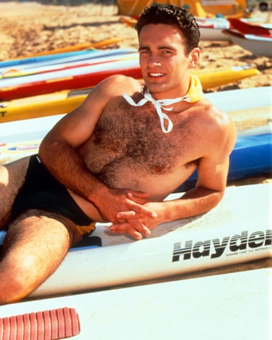

Julian McMahon, who has died of cancer aged 56, was one of a select band who graduated from Australian soap actor to Hollywood star. Guy Pearce , Alan Dale and Margot Robbie were among those who conquered Tinseltown after regular roles in Neighbours – which also helped to launch Kylie Minogue and Jason Donovan ’s singing talents on both sides of the world – while Home and Away could boast McMahon, Isla Fisher and Chris Hemsworth.
McMahon’s appearances as a model in 1987 Levi’s commercials, which included him teasingly pulling up a pair of the brand’s famous 501 jeans over his briefs, brought his clean-cut good looks and sex appeal to the attention of producers at the Seven Network.
They cast him in a new daytime serial, The Power, The Passion (1989-90), as Kane Edmonds, a medical student and grandson of the wealthy but nasty business executive surrounded by a family of vultures waiting to pounce once he dies.
McMahon as Ben Lucini in Home and Away in 1990.Photograph: David Nichols/Shutterstock
When the soap was dropped after a year, McMahon joined Home and Away, broadcast in the evening in Australia. After four auditions, he had a 16-month run as Ben Lucini (1990-91), a relaxed, easy-going soldier with Italian ancestry arriving in the fictional Summer Bay and grappling with whether to sign on for a further five-year term in the army.
Within two weeks, Ben proposed to Carly Morris (Sharyn Hodgson), a teenager with a troubled past. He rejoined the army and she moved to Perth with him. More than 12 million ITV viewers tuned in for the wedding in Britain, where McMahon and Hodgson were among the cast during a 1991 stage tour of Home and Away: The Musical.
McMahon also met Dannii Minogue , sister of Kylie, through the soap. When she launched her music career, he appeared as her boyfriend in promotional videos for her 1993 hits This Is It and This Is the Way , before they married in 1994.
They divorced a year later, with Minogue claiming that her mother-in-law, the socialite Lady Sonia McMahon, refused to speak to her. “I was never accepted,” she said.
The couple were also separated for long intervals by McMahon spending time in the US as Hollywood opened its doors to him. He eased himself in through another soap, playing Ian Rain, a gardener, then restaurant manager, aiming to take revenge on his father’s killer, in the long-running daytime serial Another World. “Here I was, this 22-year-old dude from Australia, and the first scene I had to shoot was in a Speedo, getting out of the Cory [family] pool,” he told Soap Opera Digest in 2020.
McMahon, right, with his co-star Dylan Walsh in a publicity photograph for Nip/Tuck in 2003.Photograph: Alamy/Allstar
Further roles came his way in US peak-time programmes before he found worldwide fame as the playboy plastic surgeon Dr Christian Troy in Nip/Tuck . He and Dylan Walsh, who played Dr Sean McNamara, starred as the owners of the McNamara/Troy plastic-surgery centre in a drama reflecting a new real-life obsession with beauty and looking young.
Nip/Tuck’s first series, screened on FX in the US, was the most-watched cable programme of 2003 and by its second run was dubbed the “coolest show on television” by TV Guide. The drama was finally axed in 2010 after 100 episodes.
McMahon was born in Sydney shortly before his father, the Liberal politician William McMahon, became Australia’s 20th prime minister. Julian and his sisters, Deborah and Melinda, were left in the care of a nanny while William and his wife, Sonia (nee Hopkins), stayed in Canberra, the seat of government. On leaving Sydney Grammar, a private school, McMahon spent several months studying economics at Wollongong University before dropping out to become a model.
One of his earliest TV roles on settling in the US was the crusading Detective John Grant in all four series of Profiler (1996-2000). He followed it by playing Cole Turner, a half-demon who marries Phoebe Halliwell (Alyssa Milano), one of the three leading witches, in the supernatural drama Charmed , between 2000 and 2005.
McMahon as Doctor Doom in Fantastic Four – Rise of the Silver Surfer in 2007.Photograph: 20th Century Fox/Marvel/Kobal/Shutterstock
Later, he was Jonah, an Australian doctor, in Runaways (from 2017 to 2019); a special agent, Jess LaCroix, in FBI (from 2019 to 2021) and its spin-offs, FBI: Most Wanted (from 2020 to 2022) and FBI: International (in 2021); and the Australian prime minister in the Netflix comedy-mystery The Residence (2025).
McMahon was best known in films as the Marvel Comics villain Doctor Doom in Fantastic Four (2005) and its sequel, Fantastic Four: Rise of the Silver Surfer (2007). He also played Sandra Bullock’s husband in Premonition (2007) and the corrupt US vice-president, alongside Bruce Willis, in RED (2010).
Returning to Australia occasionally, he appeared in the films Bait (2012) as a supermarket robber, the 1970s beachside partner-swapping comedy Swinging Safari (2018) and the leader of a group of beach bullies, opposite Nicolas Cage, in The Surfer (2024).
McMahon’s second marriage, in 1999 to the Baywatch actor Brooke Burns, ended in divorce in 2001. In 2014, he married Kelly Paniagua. She and Madison, the daughter from his second marriage, survive him, along with his sisters.